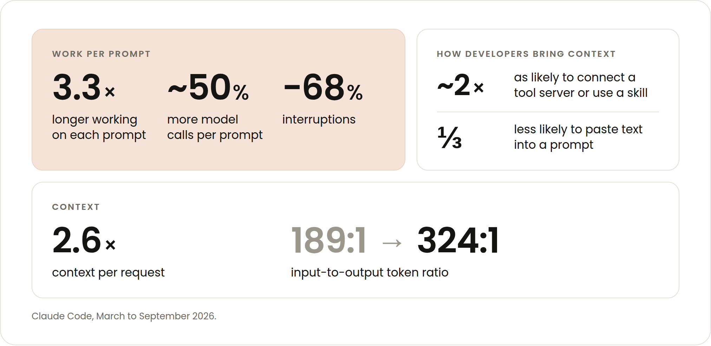
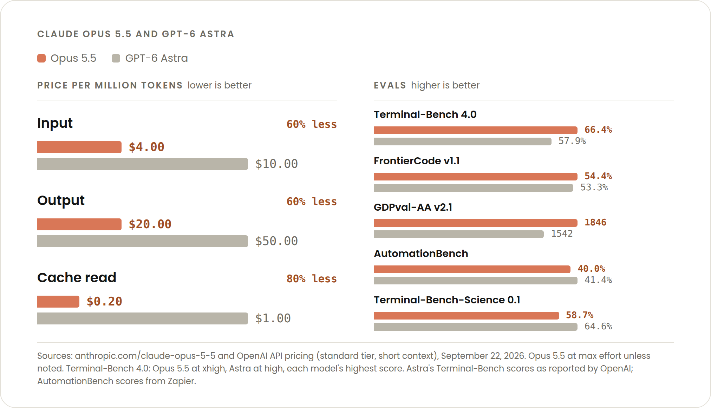

We estimate Claude Opus 5.5 costs about 40% less to run than Opus 5 for typical workloads billed by token. For developers, exactly how those savings stack up matters.
If you pay by the token, you will see the greatest cost difference for longer-running, higher context sessions–the exact type of Claude Code sessions that have become more prevalent in the last six months.
This post will dive into the mechanics of what makes Opus 5.5 cost effective for how developers are coding today (and likely tomorrow).
Claude Code trends
We've pulled aggregate data on how developers have been using Claude Code from March to September 2026. As model capabilities improve, developers have been deploying agents in increasingly sophisticated ways. The number of prompts per session has been steady, but we found some interesting behaviors:
- Claude works 3.3x longer on each prompt with more than 40% more model calls per prompt. There are 68% fewer interruptions.
- Developers are about twice as likely to have a tool server connected or use a skill and a third less likely to paste text into a prompt.
- Context per request has grown 2.6x. The input to output token ratio moved from 189:1 to 324:1.

All of this points to developers aiming a harder working, better informed Claude toward bigger, more open-ended tasks. For these types of sessions, the economic impact of context engineering is compounded.
Simply put, Claude reads more tokens. You need to make sure all the context you are providing is necessary, and that as much of that context as possible is reading from cache.
What makes Opus 5.5 cost effective for long, context heavy sessions
There are three changes that make long-running, context-heavy sessions more cost effective: changes to pricing, model behavior, and the Claude Code harness. Let’s look at each.
Cache is cheap
For usage billed by the token, we reduced the cost of input and output tokens 20%, and we dropped the price of reading a cached token 60%. The latter reduction is significant because cache reads make up the majority of agentic and coding work costs.
And as we just discussed, context per request has increased roughly 2.6x in six months, which means savings are trending in the right direction. The same price change for those billed by token saves more on today's Claude Code traffic than it would have six months ago, because more of the bill is now re-read context.
As of the publication date, a cached token on Opus 5.5 costs a fifth of what it does compared to competing models while outperforming them.

Claude Code is better at using the cache
This is less specific to Opus 5.5, and more the result of many of the Claude Code features we’ve added in the last six months. Given the coding session trends we just discussed, you would expect a higher rate of cache misses, but the opposite is true. Input that misses the cache decreased by more than 50%.
For example, we made it harder to unintentionally break your cache with smaller papercuts like refreshing a login. We also made it harder to break with larger actions, like adding instructions mid-conversation or loading tools on demand. For newer models like Opus 5.5 and Fable 5.1, you can now change effort levels during your sessions without resetting your cache.
We also made the cache more useful for longer-running and delegated sessions. Developers on API keys and cloud providers can now set a one-hour cache lifetime (which subscribers already had) and forked subagents start from the parent's cache instead of paying for the same context again.
The same task, but with fewer turns
Opus 5.5 can need fewer turns than other models to accomplish the same task. Zeta Labs saw fewer turns and tool calls per task than Opus 5, but at nearly half the cost and twice as many of their hardest tasks completed.
This won't hold for every task. In The cost of a task on Opus 5.5, Addy wrote, "On a well-scoped task, both models finish in about the same number of turns, and the price cut is all you get. The gap should be biggest on open-ended tasks, where a model can spend many turns on the wrong idea. No single number holds for every codebase, so measure it."
In other words, simple, short, and mechanical tasks will take the same amount of turns while longer, harder tasks have more potential for Opus 5.5 to avoid burning tokens on the wrong approach. A reduced turn is even more cost efficient than a cached token.
Also worth noting, especially as Claude works longer unattended or uninterrupted, is that Opus 5.5 generates output more than 30% faster than Opus 5. While this doesn’t increase cache hit rate or use less tokens, it means waiting less on long runs.
Protect your cached reads
As agentic coding has matured, organizations have shifted from asking developers to scale at all costs to asking developers to scale efficiently. Run /usage in Claude Code to see how much of your usage is cached reads. Then protect that number:
- Pick your model at the start of a session rather than switching midway,
- Compact before you step away rather than after, and
- If you're on an API key or cloud provider, set the one-hour cache lifetime for long sessions.
Point Opus 5.5 at the open-ended, context-heavy work where those habits compound, and see What a task costs on Opus 5.5 for the worked numbers.